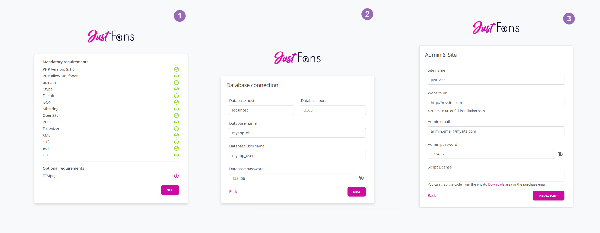

Thanks for checking out the documentation of our
JustFans product. Here you'll find about everything you need in order to get started with launching your app.
If you are not familiar with the terms or the techstack or if you don't have the time to install and configure the application, we cand handle the installation services for an additional fee.
Server requirements
Before proceeding with the installation, please make sure your instance meets the following criteria.
| Requirement |
Minimum Version / Details |
| Webserver |
Apache (with mod_rewrite), Nginx, or Litespeed |
| Database |
MySQL 5.7.7+ or MariaDB 10.3.17+ (with PHP-PDO/mysqlnd driver) |
| PHP Version |
PHP ≥ 8.1 |
| PHP Extensions |
BCMath, Ctype, Fileinfo, JSON, Mbstring, OpenSSL,
PDO, Tokenizer, XML, cURL, exif, GD
|
| PHP Functions |
symlink, readlink
|
- Nginx requires a vhost similar to the default laravel one.
- The script can ran on pretty much everything, but for hosting, we usually recommend DigitalOcean servers.
- If having less tech experience, we strongly recommend using a panel-based server. EG: cPanel/Cyberpanel.
Files Setup
Before proceeding with the installation, you need to extract the script contents
onto the directory that will serve your domain. This can be done via cPanel’s
File Manager, FTP, or command line.
Upload and extract the archive
- 1. If you’re using cPanel, navigate to File Manager and upload
your
.zip file containing the script.
- 2. Once uploaded, right-click and choose Extract
to unpack all contents.
- 3. Copy the contents of the
Script folder onto the public_html directory of the domain your are about to use.
- 4. Make sure you also copy any hidden files (e.g.,
.env,
.htaccess).
Configure file permissions
In order for the script to work properly, set the following folders to
CHMOD 755: vendor, storage, bootstrap .
For more info on setting permissions, see:
Changing the public directory
Important
Configure your web server’s document root to point to the public
directory of the software. For example, if you uploaded the code into
example.com, update the doc root to example.com/public.
If your hosting provider doesn’t allow changing your DocumentRoot,
you can temporarily rename .htaccess.sample to .htaccess.
Use this only as a temporary solution.
For more info on changing the Document Root:
Database Setup
You need a MySQL or MariaDB database ready for the script.
If using cPanel, go to MySQL Databases or the
MySQL Database Wizard to create a new database and user.
- Create a new database (e.g.,
myapp_db).
- Create a new user (e.g.,
myapp_user) with a secure password.
-
Assign the user to the database, ensuring it has
ALL PRIVILEGES or the privileges required by your script.
Once done, you should have the following info:
- Database Name (e.g.,
myapp_db)
- Database Username (e.g.,
myapp_user)
- Database Password (e.g.,
123456)
- Database Host (often
localhost)
For more detailed instructions, see:
Installer
After preparing your files and database, run the web-based installer by visiting
https://your-domain.com/install. This panel will guide you through a
simple, 3-step process:
-
Requirements Check: The installer verifies if your server meets the
minimum requirements (PHP version, extensions, etc.). If something is missing,
you’ll need to fix it before proceeding.
-
Database Setup: Provide the DB name, user, password, and host you created above.
-
Site & Admin Settings: Configure your site’s name, admin login credentials,
and license details.
Once you finish, the installer will set up your database tables, and you’ll be
ready to log in to your admin panel to customize additional aspects of the platform.

If the web-installer is not available at https://your-domain.com/install, check out the https://your-domain.com/public/install one as well. If that one functions, it means you're DocumentRoot isn't properly set.
Basic configuration
There are many services and features you can configure and enable. However, for a working platform, these services will have to be configured first.
| Requirement |
Details |
| Payments |
Required for receiving payments. |
| Websockets |
Required for the messenger and other live functionalities |
| Emails |
Required for sending platform's transactional email |
| Cronjobs |
Required for different scheduled tasks. |
Payments system
Below are instructions for each supported gateway. Follow the relevant steps
for the provider(s) you plan to use.
| Provider |
Deposits |
Tips & PPV |
Subscriptions |
Adult content |
Region |
Currencies |
| Paypal |
|
|
|
|
Global |
Multiple |
| Stripe |
|
|
|
|
Global |
Multiple |
| CCBill |
|
|
|
|
Global |
Multiple |
| NowPayments |
|
|
|
|
Global |
Multiple |
| Coinbase |
|
|
|
|
Global |
Multiple |
| Paystack |
|
|
|
|
Africa |
USD, NGN, GHS, ZAR, KES |
| MercadoPago |
|
|
|
|
South America |
ARS, BRL, MXN, CLP, COP, PEN, UYU |
| Offline payments |
|
|
|
|
Global |
Multiple |
To receive payments, you need to set up at least one payment provider.
Go to
Admin > Settings > Payments to configure your general payments settings and configure the chosen provider(s).
# Stripe
-
Log in to your
Stripe Dashboard.
-
From the sidebar, go to
Developers
>
API Keys.
-
Copy the
Publishable key and Secret key and paste them into
Admin > Settings > Payments > Processors > Stripe.
-
Next, open
Webhooks
and click
Add endpoint.
-
For the
Endpoint URL, use the webhook endpoint from
Admin > Settings > Payments > Processors > Stripe.
-
Select the
Version (latest) and choose
Select all events under events to listen to.
-
Once created, Stripe provides a Webhook secret.
Copy that into
Admin > Settings > Payments >
Stripe Webhooks Secret.
-
Enable OXXO with Stripe
- Complete the general setup steps outlined above.
-
Log in to your Stripe account and navigate to
Payment methods. Enable OXXO as a payment method.
-
In the admin panel, go to
Settings > Payments > Processors > Stripe and enable OXXO.
-
Update the existing webhook to listen for the following events:
checkout.session.async_payment_succeededcheckout.session.async_payment_failed
-
Enable iDEAL, Blik, Bancontact, EPS, Giropay, and Przelewy24 with Stripe
- Complete the general setup steps outlined above. Enabling OXXO is optional.
-
Log in to your Stripe account and navigate to
Payment methods. Enable the desired payment methods.
-
In the admin panel, go to
Settings > Payments > Processors > Stripe and enable the desired payment methods so they appear on the Stripe checkout page.
# PayPal
-
Log in via the
PayPal Developer Dashboard
.
-
Go to
My apps & credentials
, set
Live, and click Create App to make a new PayPal app.
-
Copy the
ClientID & Secret Key and add them into
Settings > Payments in your admin panel.
-
Back in the PayPal dashboard, select your newly created app (under
Live).
-
Scroll down to
Production Webhooks and click Add Webhook.
-
For Webhook URL, use the endpoint from
Admin > Settings > Payments.
-
Under Event types, select
All Events and click
Save.
# Coinbase
-
Log in to
Coinbase Commerce.
-
Go to the
Settings section.
-
Under API keys, click Create an API key and copy it.
Paste it into Settings > Payments in your admin panel.
-
For Webhook subscriptions, click Add an endpoint.
The webhook URL is in
Admin > Settings > Payments.
-
Click Show shared secret and add it into the admin panel as well.
# NowPayments
-
Log in at
NowPayments.
-
Go to
Store settings
and add a new API Key.
-
Copy the key and paste it into Settings > Payments
as
NowPayments Api Key.
-
Generate an
IPN secret key there and add it into
Admin > Settings > Payments > NowPayments IPN Secret Key.
-
Add crypto wallets in your NowPayments account. We recommend adding many to
lower conversion rates.
-
We recommend setting a payment covering percentage
so that slightly underpaid transactions can still count as completed.
Example: If set to 5%, a $100 invoice will be treated as paid in full
if $95 is received.
If a payment is partially paid below your threshold,
you will receive an email to manually process or refund.
# CCBill
-
Log in via
CCBill sign in.
-
Go to FlexForms Systems and note your Flex ID.
-
Add the
FlexForm Id in
Settings > Payments > Processors > CCBill.
-
Add your
CCBill Account Number in admin settings.
-
Go to
Account Info > Sub Account Admin, under Basic
to set your approval & denial URLs (from Admin > Settings > Payments).
-
In
Webhooks, add your admin CCBill Webhook URL
(format: JSON).
-
For recurring payments, repeat steps for your recurring sub account.
-
Request your
Salt key from CCBill and fill it in the admin panel.
-
To automatically cancel subscriptions, set up a DataLink API user:
- In your CCBill recurring sub account, go to
Account info > DataLink Services Suite.
- Click
Add user, fill in a username and password,
enable Subsystem checkboxes, and add your server IP to Valid Ips.
- Click Store user and add these credentials in
Settings > Payments > Processors > CCBill
as CCBill DataLink Username / Password.
# Paystack
-
Log in at
Paystack dashboard
.
-
Go to
Settings > Developer
.
-
Under API Keys & Webhooks, copy the
Secret key
and paste it into
Settings > Payments > Processors > Paystack.
-
Copy your
Webhook & Callback URLs from the admin panel
and add them to Paystack’s Settings > Developer as well.
# MercadoPago
-
Log in to your MercadoPago developer account at
MercadoPago Developer Portal.
-
Navigate to Your Applications.
-
Click Create Application.
-
Choose a name for your application.
-
Under
What type of payment solution will you integrate?, select Online payments.
-
For
Are you using an e-commerce platform?, select No.
-
Under
Which product are you integrating?, select CheckoutPro.
-
The
Integration model field is optional, so you can leave it empty.
-
After successfully creating the application, go to the
Production Credentials section.
-
Copy the
Access Token and add it into the admin panel under
Settings > Payments > Processors > Mercado.
# Offline Payments
- You can set up the offline payments by going to
Admin > Settings > Payments > Processors, and select Offline payments under the Payment provider field.
- In there, you can setup your bank account details or additional details, which users can use to send you manual payments.
- After a user deposited via manual payments, you will be able to preview his request over
Admin > Money > Payment Request.
- If you confirm the money have been received, you can approve the user request. He will then be notified that the request has been approved or not.
Withdrawals
Withdrawals can be done either manually, EG: you send the money yourself to the creator via selected/allowed payment providers, or automatically, via Stripe Connect, where users go through Stripe onboarding flow.
# Manual Withdrawals
-
Navigate to
Admin > Settings > Payments > Withdrawal to enable the available manual payout methods and other details.
-
Users can create new withdrawal requests over
User menu > Wallet > Withdrawals, filling in the required data based on the provider (e.g., PayPal, Bank Account, etc.).
-
You can preview the request in the admin panel, over at
Admin > Money > Withdrawals, process the payout, and approve or disapprove the request. You will also receive an email notification when a withdrawal request is made.
-
Users will be notified when their request is approved or disapproved.
# Stripe Connect Withdrawals
-
If you haven't already, create a Stripe account and add all required details.
-
Log in to your Stripe account and navigate to the Stripe Dashboard.
-
Go to
Settings > Connect settings and enable Stripe Connect by agreeing to the terms and conditions.
-
Set up your branding, including logos and colors, to customize the onboarding experience.
-
Navigate to the Payout settings page:
- External Accounts Tab:
- Require at least one bank account? -> Recommended:
Yes
- Allow debit cards? -> Optional
-
Under
Stripe-hosted onboarding for Custom accounts, set
Collect external account information for Custom accounts to Yes.
- Payout Schedules Tab:
- Disable
Allow accounts to manage their payout schedule, as payouts are created manually.
- Alternative Currency Payouts Tab:
- Enable
Allow accounts to receive payouts in alternative currencies for users with accounts in different currencies.
-
Set up a webhook endpoint:
- Go to Developers > Webhooks.
-
Configure the following settings:
- Endpoint URL: Found in
Admin > Settings > Payments > Withdrawals.
- Listen to:
Events on Connected accounts.
- Events to listen:
account.updated, payout.canceled, payout.failed, payout.paid.
- Click
Add endpoint and copy the Signing secret into the admin panel under
Settings > Payments > Withdrawals > Stripe Connect Webhooks Secret.
-
Enable Stripe Connect for withdrawals in the admin panel by toggling
Enable Stripe Connect for withdrawals.
Stripe Connect does not allow adult content platforms.
Since this platform uses Stripe Connect with Custom accounts, ensure you meet
their requirements.
Cron Setup
In order for the platform to function fully, including payment processing,
emails, offers, and more, you need to set up the following cron job.
You can get the exact cron command path out of Admin > Settings > Payments area.
* * * * * cd /path-to-your-project && php artisan schedule:run >> /dev/null 2>&1
Some hosting panels might require the cron command in a different format.
If needed, you can run it with absolute paths or specific PHP versions:
* * * * * php /path-to-your-project/artisan schedule:run >> /dev/null 2>&1
Other hosting panels with have you set the task interval out of their own UI, so you might end up using a command that doesn't include the * * * * * prefix.
Ensure Cron Jobs Are Running
Cron jobs are crucial for payments, emails, and other scheduled tasks.
- Ensure they’re not returning any errors by manually running
cd /path-to-your-project && php artisan schedule:run via CLI.
- Check that
storage/logs/cronjobs.log exists within 24h since the task has been setup.
For more info on setting up cron jobs:
Emails
You can choose among three main email drivers—Mailgun (via API), SMTP, or PHP’s
mail() function, if available. There’s also a logging driver
option for debugging.
All email-related settings are located under
Admin > Settings > Emails. Below is a quick summary:
-
Mail from name: The display name used when sending emails.
-
Mail from address: The sending address
(e.g.,
no-reply@domain.com).
# Log Driver
The Log driver is mostly used for debugging. Any outgoing emails are
recorded in storage/logs/laravel.log instead of being sent.
# Sendmail Driver
This driver relies on the PHP mail() function being active.
Many cPanel-based shared hosting providers enable it by default.
# Mailgun Driver
Mailgun is an API-based service. To use it, you’ll need:
-
Mailgun domain – The custom domain/subdomain you set
up on Mailgun, along with valid DNS records.
-
Mailgun secret –
Domain API key
-
Mailgun endpoint – Typically
api.mailgun.net for US or
api.eu.mailgun.net for EU.
# SMTP Driver
Using SMTP requires the following:
-
SMTP Host – e.g., your mail server’s hostname or IP
-
SMTP Port –
587 (TLS) or 465 (SSL), depending on provider
-
SMTP Encryption –
TLS or SSL
-
SMTP Username
-
SMTP Password
Notes:
-
To test email configuration, create a new user account and see if
a confirmation or welcome email is successfully generated.
If misconfigured, you may get a 500 error (though the user
might still be created in your database).
-
All drivers are fine if configured properly,
but Mailgun via API often yields the fastest send times.
Websockets
The platform utilizes Websockets to provide real-time capabilities, such as instant messaging and live notifications.
Follow the respective driver setup instructions below to configure Websockets for your platform.
# Pusher Websockets
Pusher is a managed Websockets service, offering simplicity and reliability. To set it up:
-
Log in to the Pusher Dashboard and navigate to the
Channels category.
-
Click
Create app, then provide a Name and choose a Cluster Region based on your preference.
-
Access your app details, or visit Apps and select your app.
-
Copy the
App ID, Key, Secret, and Cluster values from Pusher,
then save them to the admin panel under Admin > Settings > Websockets.
Note: When using Pusher-based Websockets, the maximum message length is limited to 800 characters.
# Soketi Websockets
Soketi is a self-hosted alternative to Pusher, offering cost-effectiveness and greater control. To configure Soketi:
-
Change the
Websockets driver to Soketi in the admin panel.
-
Add your configured
Host, Port, App ID, App Key, and App Secret.
-
If your Soketi instance uses TLS, enable the
Use TLS for Soketi toggle in the admin panel and set the port to 443.
Note: Ensure your Soketi server is running and accessible. Proper configuration is essential for reliable performance.
If you don't want to be using the default local storage system, you can use wide range of scalable storage providers for storing your user-uploaded files, improving site I/O load, response time and security.
#
Amazon's S3
Use our AWS S3 implementation (including CloudFront and CloudFront Signed URLs) for faster and more secure delivery via pre-signed URLs.
S3 Storage
Follow these steps to upload your data to Amazon S3:
-
Create an S3 Bucket:
- Go to AWS Console and log in or create an account.
- Search for S3 in the
Search for services bar.
- Click
Buckets > Create bucket.
- Specify the
Bucket name and Region.
- Enable
ACLs.
- Disable
Block all public access.
-
Acknowledge the warning by enabling:
I acknowledge that the current settings might result in this bucket and the objects within becoming public.
- Click Create bucket.
-
Create an IAM User with S3 Permissions:
- Go to
IAM > Access management > Users.
- Click Add users and set a
Username.
-
Under Permissions, choose
Attach policies directly and search for
AmazonS3FullAccess.
- Click Next, review the settings, and click Create user.
- Once created, click the username to view details.
-
Go to Security credentials and click Create access key.
-
Choose an appropriate use case (e.g.,
Other) and click Create access key.
-
Save the
AWS Access Key ID and Secret access key. You won’t be able to view the secret key again.
-
Configure S3 in the Admin Panel:
- Go to
Admin > Settings > Storage.
- Enter the
Bucket name, AWS Access Key ID, and AWS Secret Access Key.
S3 + CloudFront
Use CloudFront to distribute your content globally:
-
Search for CloudFront in the AWS Console and go to
Distributions > Create distribution.
-
Copy the
Distribution domain name (e.g., abc123.cloudfront.net) and configure it in
Admin > Settings > Storage under Aws CloudFront Domain Name.
-
Update the S3 bucket policy to allow CloudFront access while retaining IAM user write permissions:
{
"Version": "2008-10-17",
"Statement": [
{
"Sid": "AllowCloudFrontAccess",
"Effect": "Allow",
"Principal": {"Service": "cloudfront.amazonaws.com"},
"Action": "s3:GetObject",
"Resource": "arn:aws:s3:::your-bucket-name/*",
"Condition": {
"StringEquals": {
"AWS:SourceArn": "arn:aws:cloudfront::your-account-id:distribution/your-cdn-distribution-id"
}
}
},
{
"Sid": "AllowIAMUserWrite",
"Effect": "Allow",
"Principal": {"AWS": "arn:aws:iam::your-account-id:user/your-iam-user-name"},
"Action": "s3:PutObject",
"Resource": "arn:aws:s3:::your-bucket-name/*"
}
]
}
-
Adjust Bucket Access Settings:
- Disable Block all public access.
-
Manually select options to allow write access for IAM users while restricting object access to CloudFront.
Disable Block all public access and enable all the options manually except Block public access to buckets and objects granted through new access control lists (ACLs)
S3 + CloudFront + Signed URLs
Follow these steps to use signed URLs for secure access:
-
Create a key pair (e.g., via OpenSSL):
The steps below use OpenSSL as an example. There are other methods as well.
- Generate a private key:
openssl genrsa -out private_key.pem 2048
- Extract the public key:
openssl rsa -pubout -in private_key.pem -out public_key.pem
-
Upload the public key to CloudFront:
-
Log into
CloudFront console
.
- Go to
Key management > Public keys > Create public key.
- Paste the contents of
public_key.pem and save.
-
Copy the Public Key ID after adding. This is your
Key-Pair-Id (and corresponds to
Aws CloudFront Key Pair Id in the admin panel).
-
Create a key group:
- Go to
Key management > Key groups > Create key group.
- Add the uploaded public key to the group and save.
-
Link the key group to your distribution:
- Open your distribution settings and edit the behavior for the desired path.
- Enable Restrict Viewer Access and select the trusted key group.
-
Navigate to Admin > Settings > Storage in your admin panel.
- Add the following:
- Key-Pair-Id: Your CloudFront Public Key ID.
-
Path to private_key.pem: The file path where your private key is stored
(e.g.,
private_key.pem if it’s in the root directory).
- Enable CloudFront PreSigned URLs.
For more information, refer to the official
AWS documentation on private content with signed URLs
.
# Wasabi
If you prefer using Wasabi, change the driver in
Admin > Settings > Storage > Driver.
Then add your Wasabi credentials (found on their website).
You must also add the following policy to your Wasabi bucket:
{
"Version": "2012-10-17",
"Statement": [
{
"Sid": "AllowPublicRead",
"Effect": "Allow",
"Principal": {
"AWS": "*"
},
"Action": "s3:GetObject",
"Resource": "arn:aws:s3:::your-bucket-name/*"
}
]
}
Notes:
-
Make sure your account is validated so buckets can be public.
-
Wasabi buckets cannot have dots in their names
# DigitalOcean Spaces
If you want to use
DigitalOcean Spaces,
select it under
Admin > Settings > Storage > Driver.
Then follow these steps:
-
Create a new
Spaces access key
and save the key/secret.
-
In
Admin > Settings > Storage, add your new
DO Access Key and DO Secret Key.
-
Go to Spaces and create a new space.
Defaults should be fine.
-
Once created, you’ll see a URL like
https://{bucket-name}.{region}.digitaloceanspaces.com.
-
For
DO Bucket, use {bucket-name},
and for DO Region, use {region}.
# Minio
If you have a self-hosted Minio instance, you can switch the driver to Minio in
Admin > Settings > Storage > Driver. Then:
- Create a new set of keys in Minio and copy them.
-
In
Admin > Settings > Storage, fill in
Minio Access Key and Minio Secret Key.
-
Create a new bucket and set it in
Admin > Settings > Storage > Minio bucket.
-
For
Minio Region, specify the region your instance uses.
-
For
Minio Endpoint, specify your Minio server endpoint.
# PushrCDN
If you have a
PushrCDN
account, you can switch the driver to PushrCDN under
Admin > Settings > Storage > Driver. Then:
-
Go to the
CDN page
and create a
Push zone.
-
Set a label and for
Sonic Storage Type, choose AWS S3-compatible.
-
Open
Storage and Hostnames, then fill in your
keys, bucketname, S3 endpoint,
and CDN Hostname.
Video Transcoding
Video transcoding is essential for allowing users to upload and play videos in various formats. If no video transcoding service is not available, the platform will restrict uploads to .mp4 files only.
If no video transcoding service is not available, the platform will restrict uploads to .mp4 files only.
Video transcoding drivers can be selected at Admin > Settings > Media > Videos > Transcoding driver.
# FFMpeg Driver
FFMpeg is an open-source tool used for processing multimedia content. With FFMpeg installed on your server, users can upload videos in multiple formats, which will then be converted to playable formats.
-
Testing FFMpeg Installation
After installing FFMpeg, you can verify the installation using the following commands:
ffmpeg -version # To test installation
which ffmpeg && which ffprobe # To get full executable paths
-
Configuring FFMpeg in Admin
Copy the full paths of the bin/ffmpeg and bin/ffprobe executables and add them in the admin panel under Admin > Settings > Media > Videos, select Transcoding Driver to FFMpeg, then fill in the FFmpeg path and FFProbe Path.
# Coconut Driver
Coconut is a cloud-based video transcoding solution that provides an alternative to FFMpeg. It enables remote transcoding, making it suitable for platforms that cannot host FFMpeg or require scalable processing.
-
Register an account on Coconut.
-
Navigate to the API section and retrieve your API key.
-
Go to
Admin > Settings > Media > Videos and select Coconut for the Transcoding driver and add your API key.
-
Configure the encoding options according to your needs.
Before launching your site, test the video transcoding functionality to ensure everything works as expected. You can preview transcoded videos on the
Coconut dashboard.
Note: Coconut transcoding requires a remote storage provider. Ensure you have set up a provider as described in the
storage guide.
Note: Coconut transcoding requires a WebSockets provider. Ensure WebSockets are configured correctly as per the
WebSockets guide.
Live Streaming
To enable live streaming on your platform, you need a PushrCDN account.
Once your account is created, follow the steps below to complete the configuration.
Account Verification
After registering for PushrCDN, verify your account by completing the following steps:
-
Fill in your personal information.
-
Provide your payment information.
-
Navigate to
Media Platform > Go Live and submit the required verification details.
Configuration Steps
Once your account is verified, set up live streaming by following these steps:
-
Go to CDN > Push Zones and create a new push zone.
-
Copy the CDN Push Zone ID and add it to the
Admin > Streaming > Pushr Zone Id field in your admin panel.
-
Retrieve your API key from the Profile > Personal Information section, and add it to the
Admin > Streaming > Pushr Key field.
-
For the
Admin > Streaming > Pushr Encoder, select one of the available encoders: eu, us, or sg.
Finalizing Setup
After entering your PushrCDN Zone ID and API Key, your platform will be configured to support live streaming. From the admin panel, you can also adjust additional settings, such as VODs, encoders, or bitrates, to optimize your streaming experience.
Captcha
To protect your public forms (e.g., registration, contact, etc.) from spam, you can choose
one of the following drivers under
Admin > Settings > Security > Captcha:
- Google reCAPTCHA
- Cloudflare Turnstile
- hCaptcha
Each driver typically requires a site key and a secret key. Once these are
added, your chosen captcha will be enforced on the designated public forms.
# Google reCAPTCHA
Google’s reCAPTCHA is a popular solution for verifying that form submissions are from real users.
-
Go to
Google reCAPTCHA Admin
to create a new app.
-
Choose
reCAPTCHA v2 > "I'm not a robot" Checkbox (or whichever suits your needs).
-
Copy the provided Site Key and Secret Key.
-
In your admin panel, navigate to
Admin > Settings > Security > Captcha.
-
Select Google reCAPTCHA as the Captcha Driver,
then paste your Site Key and Secret Key in the fields provided.
# Cloudflare Turnstile
Cloudflare Turnstile is a user-friendly, privacy-focused captcha alternative.
-
Log into
Cloudflare Dashboard
and create or open your project.
-
Go to the Turnstile section to create a new site, then copy the
Site Key and Secret Key.
-
In
Admin > Settings > Security > Captcha,
select Turnstile as the Captcha Driver
and paste your keys.
# hCaptcha
hCaptcha is another popular captcha solution focused on privacy and security.
To set it up:
-
Go to
hCaptcha’s official site
or
dashboard
and create your account.
-
Once your project is created, copy the Site Key
and Secret Key.
-
In
Admin > Settings > Security > Captcha,
select hCaptcha as the Captcha Driver.
-
Paste your hCaptcha Site Key and Secret Key into the respective fields.
GEO-Blocking
The GEO-Blocking feature allows users to restrict access to their profiles based on geographical locations.
This feature can be managed globally from the admin panel.
Enabling GEO-Blocking
To enable GEO-Blocking:
-
Go to
Admin > Settings > Security.
-
Enable the
Allow users to be able to geoblock their profiles switch.
IP Geolocation API Key
For GEO-Blocking to work, you must set up an IP geolocation API key. Follow these steps:
-
Register an account on Abstract API.
-
Generate your API key from the IP Geolocation API section.
-
Add the API key to
Admin > Settings > Security > IP Geolocation API Key.
Notes:
-
Ensure the Abstract API plan you choose supports the volume of geolocation requests your platform may generate.
-
This feature is applied at the user level, meaning users can individually set which regions to block access from.
Social logins
Though each social login provider’s interface may differ, the general steps to enable
social logins are:
- Obtain an approved app on the social login provider.
- Copy your
Client ID and Client Secret keys.
-
Add these keys to
Admin > Settings > Social media in your admin panel.
-
In
Admin > Settings > Social media, copy the
Callback URL for each provider.
-
Paste this
Callback URL into the provider’s settings (e.g.,
“Authorized redirect URIs” or “Callback URLs” field).
# Facebook
-
Visit
https://developers.facebook.com/apps
and create a new app (Consumer). Fill in any required details.
-
Go to
App settings > Basic, copy the
App ID & App secret, and add them to
Admin > Settings > Social media.
-
Navigate to
App > Facebook Login > Settings.
-
Copy the admin
Callback URL and add it under
Valid OAuth Redirect URIs in your Facebook app settings.
OpenAI
The AI-suggestions feature allows users to get smart text suggestions
(for posts, bios, or other areas) from OpenAI’s language models.
This can save time and help with writer’s block by automatically generating text ideas.
Important: OpenAI’s API is usage-based, meaning costs can accrue
if you or your users make many requests. Be sure to monitor your usage in your
OpenAI account to avoid unexpected charges.
To configure AI suggestions in this platform:
-
Go to
Admin > Settings > AI and enable the “AI suggestions” feature.
-
Create or log in to your account at
https://platform.openai.com
.
-
In your OpenAI dashboard, find the “API Keys” section. Create a
new secret key and copy it. (You won’t be able to see it again later.)
-
Back in the admin panel, under
Admin > Settings > AI,
paste your new OpenAI API Key into the field provided.
Click “Save” to update.
Once configured, users can click a button (or similar UI element) to get text suggestions
in your app’s relevant areas. If you see any errors, confirm that your API key is valid and
that your OpenAI account has sufficient credits.
# Referrals
The referral system incentivizes users to bring new creators to the platform by offering a commission
on the earnings of referred creators. This can be a cost-effective alternative to traditional marketing campaigns,
depending on your niche.
How Referrals Work
-
When a user refers someone who signs up as a creator and sells content, the referrer earns a percentage of the creator's earnings.
-
The referral commission is paid by the platform owner, not the referred creator.
-
Users can generate and share their unique referral link from
Settings > Referral.
Configuring Referrals
You can configure referral settings in the admin panel, at Admin > Settings > Referrals, being able to set options like:
-
The percentage of earnings that referrers will receive.
-
The time limit for which referral commissions are valid.
-
Any monetary cap for referral payouts.
Notes:
-
Consider setting realistic percentage and time limits to balance user incentives with platform sustainability.
-
Evaluate if referral commissions are a better fit for your platform's growth strategy compared to marketing campaigns.
Localization
To translate your site into another language, make a copy of the default
en.json file found in the lang folder and modify
it as needed.
-
The JSON language file must use an ISO code, e.g.
es.json,
ro.json, or en.json.
-
If you need to overwrite validation messages or other library strings,
copy the
en folder (and its files) and rename it to your new
language code.
Notes
- While not strictly required, installing the
php-intl extension can improve localization and help prevent
issues with custom or uncommon languages.
- If the language file json file syntax is incorrect, it might render into 500 error over the website. You can check if it's valid using a JSON validator - sample one.
If everything went fine, you can access the Admin panel at
http://your-domain.com/admin. The initial admin credentials
were set during installation/user creation.
After setting up your main admin account, you can manage roles and
create other admin users within the admin panel.
If you lose access to your admin account, you can reset the user password
or create another user with admin privileges via the following command
or SQL query:
php artisan voyager:admin user@example.comUPDATE users SET role_id = 1 WHERE email = 'user@example.com'
Using the admin panel, you can now continue with setting up the rest of settings for your instance, like branding elements, colors, taxes and more.
Before making an update, always remember to do a complete backup of your website.
If you've made any modifications to the software’s files, your changes will be lost.
Whenever new major updates are available, you will be notified via Envato. When notified, head over your Envato Downloads area and download the latest .zip archive. Once downloaded, you can proceed with:
-
Make a backup of the
.env config file located on your server.
-
Upload the
.zip, onto your server and extract it.
- Copy over (overwrite) the contents of
Script folder into your website folder.
-
Restore your
.env config file on your server.
-
Go to
https://example.com/update and follow the update
wizard.1
Common Issues
- Incomplete update — you did not run the
/update (DB) update step.
- Missing/incorrect
.env file after the update.
- Incompletely uploaded
vendor folder - Rename old one and re-add the new one.
- Missing
storage/app/installed file (you may see the installer again after update).
You can check your server logs or the app logs in storage/logs/laravel.log
for any errors.
Social logins
Though each social login provider’s interface may differ, the general steps to enable social logins are:
Client IDandClient Secretkeys.Admin > Settings > Social mediain your admin panel.Admin > Settings > Social media, copy theCallback URLfor each provider.Callback URLinto the provider’s settings (e.g., “Authorized redirect URIs” or “Callback URLs” field).